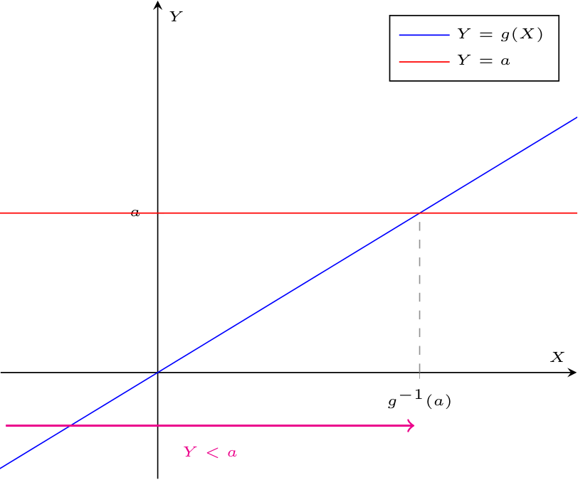
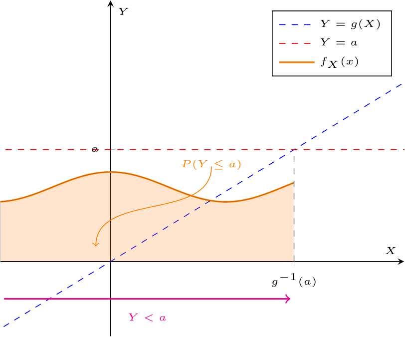
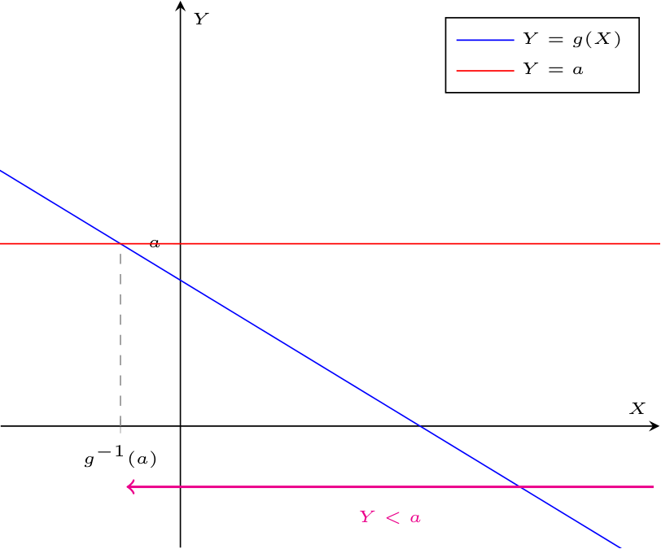
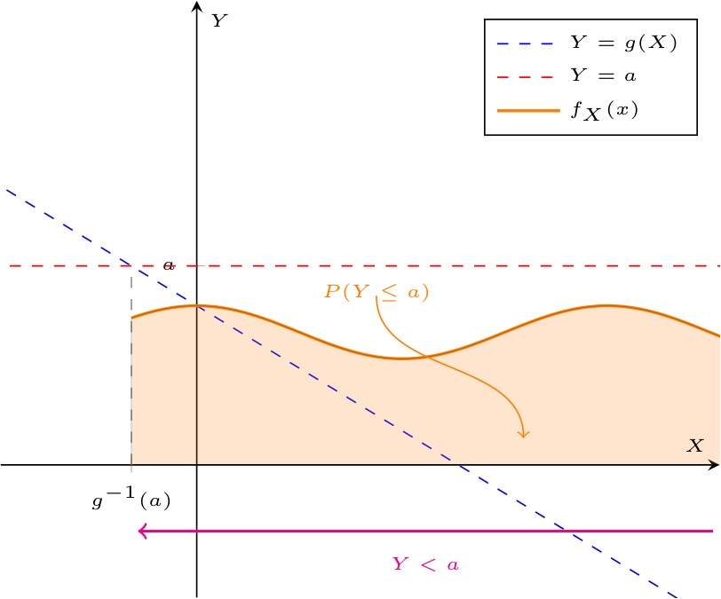
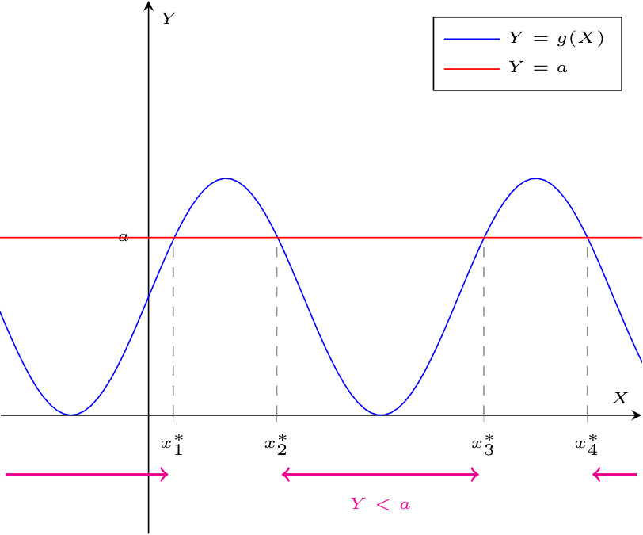
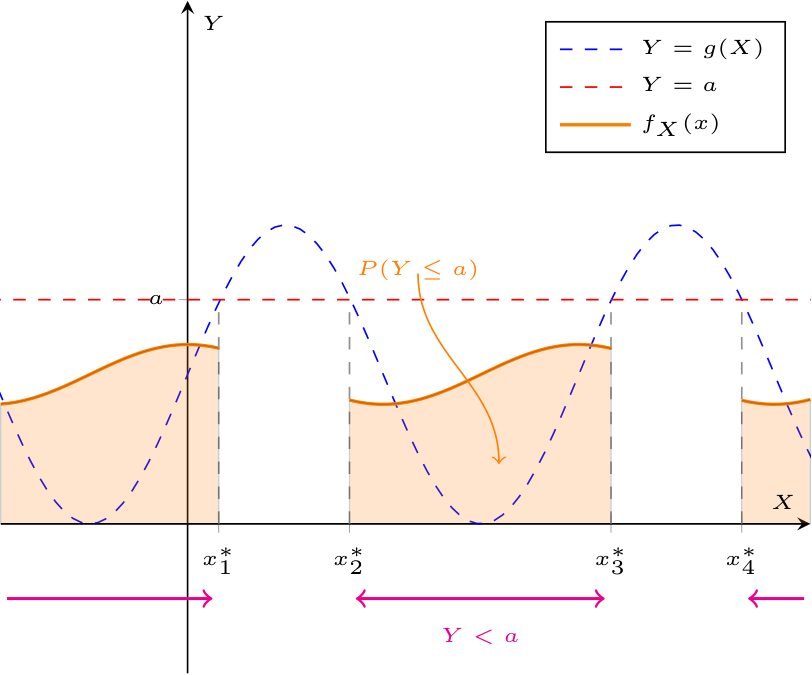
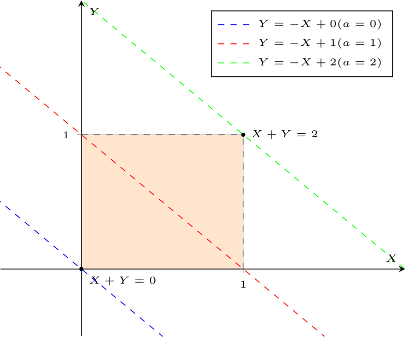
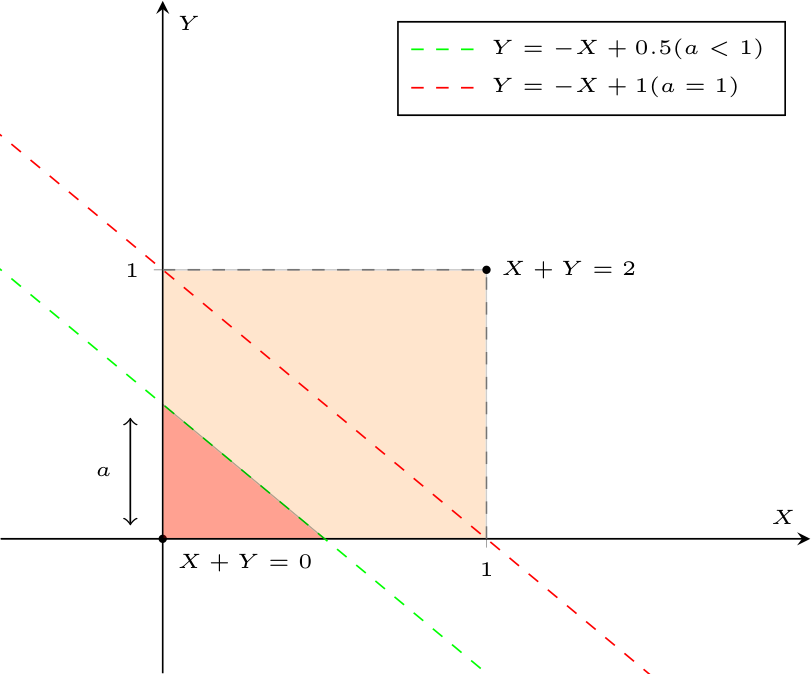
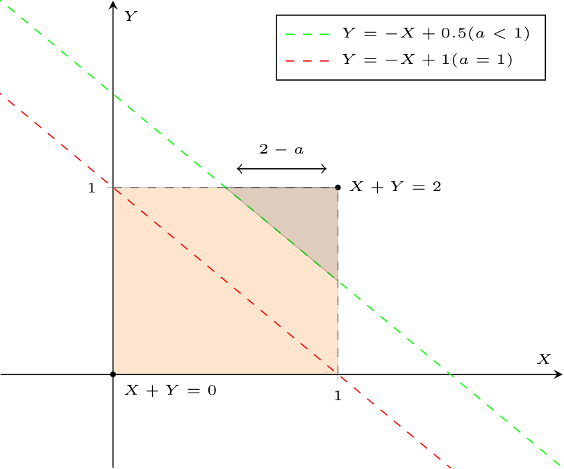

Definizione - Funzione di una variabile casuale continua
Considerando una variabile casuale continua \( X\) la cui funzione di densità è \( f_X(x)\), è possibile definire la variabile casuale continua \[ Y = g(X) \] Valore atteso e varianza Data tale variabile, si ha che, per le proprietà del valore atteso, è possibile calcolare \( E[Y]\) come \[ \begin{array}{ccl} E[Y] & = & E[g(X)] \\ & = & \int_{-\infty}^{+\infty} g(x) \cdot f_X(x) \ dx \end{array} \] e anche il momento di ordine due come \[ \begin{array}{ccl} E\left[Y^2\right] & = & E\left[ \left( g(X) \right)^2 \right] \\ & = & \int_{-\infty}^{+\infty} \left( g(x) \right)^2 \cdot f_X(x) \ dx \end{array} \] Da ciò, è quindi possibile calcolare la varianza di \( Y\) come \[ \begin{array}{ccl} Var(Y) & = & E\left[ Y^2 \right] - \left( E[Y] \right)^2 \\ & = & \int_{-\infty}^{+\infty} \left( g(x) \right)^2 \cdot f_X(x) \ dx - \left( \int_{-\infty}^{+\infty} g(x) \cdot f_X(x) \ dx \right)^2 \end{array} \]
Definizione - Funzione di densità e di ripartizione di una v. c. continua funzione di un'altra v. c. continua - \( g\) funzione strettamente monotona crescente
Considerando una variabile casuale continua \( X\) (la cui funzione di densità è \( f_X(x)\)), e una funzione monotona strettamente crescente \( g\), è possibile definire la variabile casuale continua \[ Y = g(X) \] Date queste ipotesi, si ha che \( g\) ammette inversa (esiste \( g^{-1}\)) e che la derivata prima di \( g\) (e di \( g^{-1}\)) è sempre positiva, ovvero \[ \frac{d}{dx} g(x) \gt 0 \qquad \implies \qquad \frac{d}{dx} g^{-1}(x) \gt 0 \] È quindi possibile rappresentare graficamente le due variabili casuali (ricordando che si stanno rappresentando i valori che possono assumere e non la funzione di densità che indica la probabilità che un certo valore sia assunto) Ricordando ora che la probabilità che \( X\) assuma un certo valore è descritto dall'area sottesa alla funzione di densità, si avrà che Considerando quindi di calcolare la funzione di ripartizione di \( Y\), ovvero \( F_Y(a)\) si ha che sarà uguale a \[ \begin{array}{ccl} P(Y \leq a) & = & P(g(X) \leq a) \\ & = & P(X \leq g^{-1}(a)) \\ & = & \int_{-\infty}^{g^{-1}(a)} f_X(x) \ dx \end{array} \] Ciò implica che la funzione di densità sarà uguale a \[ \begin{array}{ccl} f_Y(a) & = & \frac{d}{da} F_Y(a) \\ & = & \frac{d}{da} \left( \int_{-\infty}^{g^{-1}(a)} f_X(x) \ dx \right) \\ & = & \frac{d}{da} g^{-1}(a) \cdot f_X(g^{-1}(a)) \end{array} \]


Esempio - Calcolo della funzione di densità di una v. c. continua funzione di una v. c. uniforme - \( g\) funzione strettamente monotona crescente - Esempio 1
Considerando la variabile casuale \[ X \sim U(0, 1) \] calcolare la funzione di densità della variabile casuale \[ Y = \alpha \cdot X + \beta \qquad \text{con} \ \alpha \in \mathbb{R}^+ \ \text{e} \ \beta \in \mathbb{R} \] Per calcolare la funzione di densità di \( Y\), è possibile notare che è funzione di \( X\), in particolare è una funzione strettamente monotona crescente (in quanto \( \alpha \in \mathbb{R}^+\)). Considerando quindi che \[ f_X(x) = \left\{ \begin{array}{ll} 1 & \text{se} \ x \in [0, 1] \\ 0 & \text{altrimenti} \end{array} \right. \] Si ha quindi che è possibile calcolare la funzione di densità \( f_Y(a)\) come \[ f_Y(a) = \frac{d}{da} g^{-1}(a) \cdot f_X(g^{-1}(a)) \] Considerato quindi \( g(x) = \alpha \cdot x + \beta\), si ha che la funzione inversa sarà \begin{aligned} & g^{-1}(g(x)) = x & \iff \\ & g^{-1}(\alpha \cdot x + \beta) = x & \iff \\ & g^{-1}(x) = \frac{x - \beta}{\alpha} & \end{aligned} si ha che la derivata prima di \( g^{-1}\) è uguale a \[ \begin{array}{ccl} \frac{d}{da} g^{-1}(a) & = & \frac{d}{da} \left( \frac{a}{\alpha} - \frac{\beta}{\alpha} \right) \\ & = & \frac{1}{\alpha} \end{array} \] e il valore \( g^{-1}(a)\) è \[ \begin{array}{ccl} g^{-1}(a) & = & \frac{a}{\alpha} - \frac{\beta}{\alpha} \end{array} \] Unendo tali risultati, è possibile ottenere \[ \begin{array}{ccl} f_Y(a) & = & \frac{d}{da} g^{-1}(a) \cdot f_X(g^{-1}(a)) \\ & = & \frac{1}{\alpha} \cdot \left\{ \begin{array}{ll} 1 & \text{se} \ g^{-1}(a) \in [0, 1] \\ 0 & \text{altrimenti} \end{array} \right. \\ & = & \left\{ \begin{array}{ll} \frac{1}{\alpha} & \text{se} \ \frac{a}{\alpha} - \frac{\beta}{\alpha} \in [0, 1] \\ 0 & \text{altrimenti} \end{array} \right. \end{array} \] È inoltre possibile esprimere la condizione in maniera più esplicita, ovvero si ha che \begin{aligned} & \frac{a}{\alpha} - \frac{\beta}{\alpha} \in [0, 1] & \iff \\ & 0 \leq \frac{a}{\alpha} - \frac{\beta}{\alpha} \leq 1 & \iff \\ & 0 \leq a - \beta \leq \alpha & \iff \\ & \beta \leq a \leq \alpha + \beta & \iff \\ & a \in [\beta, \beta + \alpha] & \end{aligned} Unendo tutti questi risultati, è possibile ottenere che \[ f_Y = \left\{ \begin{array}{ll} \frac{1}{\alpha} & \text{se} \ a \in [\beta, \beta + \alpha] \\ 0 & \text{altrimenti} \end{array} \right. \] che è la funzione di densità di una variabile uniforme di parametri \( \beta\) e \( \beta + \alpha\), ovvero \[ Y \sim U(\beta, \beta + \alpha) \]
Esempio - Calcolo della funzione di densità di una v. c. continua funzione di una v. c. uniforme - \( g\) funzione strettamente monotona crescente - Esempio 2
Considerando la variabile casuale \[ X \sim U(0, 1) \] calcolare la funzione di densità della variabile casuale \[ Y = X^3 \] Per calcolare la funzione di densità di \( Y\), è possibile notare che è funzione di \( X\), in particolare è una funzione strettamente monotona crescente. Considerando quindi che \[ f_X(x) = \left\{ \begin{array}{ll} 1 & \text{se} \ x \in [0, 1] \\ 0 & \text{altrimenti} \end{array} \right. \] Si ha quindi che è possibile calcolare la funzione di densità \( f_Y(a)\) come \[ f_Y(a) = \frac{d}{da} g^{-1}(a) \cdot f_X(g^{-1}(a)) \] Considerato quindi \( g(x) = x^3\), si ha che la funzione inversa sarà \begin{aligned} & g^{-1}(g(x)) = x & \iff \\ & g^{-1}(x^3) = x & \iff \\ & g^{-1}(x) = \sqrt[3]{x} & \end{aligned} si ha che la derivata prima di \( g^{-1}\) è uguale a \[ \begin{array}{ccl} \frac{d}{da} g^{-1}(a) & = & \frac{d}{da} \left( \sqrt[3]{a} \right) \\ & = & \frac{d}{da} \left( a^{\frac{1}{3}} \right) \\ & = & \frac{1}{3} \cdot a^{-\frac{2}{3}} \\ & = & \frac{1}{3 \cdot \sqrt[3]{a^2}} \end{array} \] e il valore \( g^{-1}(a)\) è \[ \begin{array}{ccl} g^{-1}(a) & = & \sqrt[3]{a} \end{array} \] Unendo tali risultati, è possibile ottenere \[ \begin{array}{ccl} f_Y(a) & = & \frac{d}{da} g^{-1}(a) \cdot f_X(g^{-1}(a)) \\ & = & \frac{1}{3 \cdot \sqrt[3]{a^2}} \cdot \left\{ \begin{array}{ll} 1 & \text{se} \ g^{-1}(a) \in [0, 1] \\ 0 & \text{altrimenti} \end{array} \right. \\ & = & \left\{ \begin{array}{ll} \frac{1}{3 \cdot \sqrt[3]{a^2}} & \text{se} \ \sqrt[3]{a} \in [0, 1] \\ 0 & \text{altrimenti} \end{array} \right. \end{array} \]
Definizione - Funzione di densità e di ripartizione di una v. c. continua funzione di un'altra v. c. continua - \( g\) funzione strettamente monotona decrescente
Considerando una variabile casuale continua \( X\) (la cui funzione di densità è \( f_X(x)\)), e una funzione strettamente monotona decrescente \( g\), è possibile definire la variabile casuale continua \[ Y = g(X) \] Date queste ipotesi, si ha che \( g\) ammette inversa (esiste \( g^{-1}\)) e che la derivata prima di \( g\) (e di \( g^{-1}\)) è sempre negativa, ovvero \[ \frac{d}{dx} g(x) \lt 0 \qquad \implies \qquad \frac{d}{dx} g^{-1}(x) \lt 0 \] È quindi possibile rappresentare graficamente le due variabili casuali (ricordando che si stanno rappresentando i valori che possono assumere e non la funzione di densità che indica la probabilità che un certo valore sia assunto) Ricordando ora che la probabilità che \( X\) assuma un certo valore è descritto dall'area sottesa alla funzione di densità, si avrà che Considerando quindi di calcolare la funzione di ripartizione di \( Y\), ovvero \( F_Y(a)\) si ha che sarà uguale a \[ \begin{array}{ccl} P(Y \leq a) & = & P(g(X) \leq a) \\ & = & P(X \geq g^{-1}(a)) \\ & = & \int_{g^{-1}(a)}^{+\infty} f_X(x) \ dx \end{array} \] Ciò implica che la funzione di densità sarà uguale a \[ \begin{array}{ccl} f_Y(a) & = & \frac{d}{da} F_Y(a) \\ & = & \frac{d}{da} \left( \int_{g^{-1}(a)}^{+\infty} f_X(x) \ dx \right) \\ & = & -\frac{d}{da} g^{-1}(a) \cdot f_X(g^{-1}(a)) \end{array} \]


Esempio - Calcolo della funzione di densità di una v. c. continua funzione di una v. c. uniforme - \( g\) funzione strettamente monotona decrescente - Esempio 1
Considerando la variabile casuale \[ X \sim U(0, 1) \] calcolare la funzione di densità della variabile casuale \[ Y = -\ln(X) \] Per calcolare la funzione di densità di \( Y\), è possibile notare che è funzione di \( X\), in particolare è una funzione monotona decrescente. Considerando quindi che \[ f_X(x) = \left\{ \begin{array}{ll} 1 & \text{se} \ x \in [0, 1] \\ 0 & \text{altrimenti} \end{array} \right. \] Si ha quindi che è possibile calcolare la funzione di densità \( f_Y(a)\) come \[ f_Y(a) = -\frac{d}{da} g^{-1}(a) \cdot f_X(g^{-1}(a)) \] Considerato quindi \( g(x) = -\ln(x)\), si ha che la funzione inversa sarà \begin{aligned} & g^{-1}(g(x)) = x & \iff \\ & g^{-1}(-\ln(x)) = x & \iff \\ & g^{-1}(\ln(x)) = -x & \iff \\ & g^{-1}(x) = \mathrm{e}^{-x} & \iff \end{aligned} si ha che la derivata prima di \( g^{-1}\) è uguale a \[ \begin{array}{ccl} \frac{d}{da} g^{-1}(a) & = & \frac{d}{da} \left( \mathrm{e}^{-a} \right) \\ & = & -\mathrm{e}^{-a} \end{array} \] e il valore \( g^{-1}(a)\) è \[ \begin{array}{ccl} g^{-1}(a) & = & \mathrm{e}^{-a} \end{array} \] Unendo tali risultati, è possibile ottenere \[ \begin{array}{ccl} f_Y(a) & = & -\frac{d}{da} g^{-1}(a) \cdot f_X(g^{-1}(a)) \\ & = & - \left( -\mathrm{e}^{-a} \right) \cdot \left\{ \begin{array}{ll} 1 & \text{se} \ g^{-1}(a) \in [0, 1] \\ 0 & \text{altrimenti} \end{array} \right. \\ & = & \left\{ \begin{array}{ll} \mathrm{e}^{-a} & \text{se} \ \mathrm{e}^{-a} \in [0, 1] \\ 0 & \text{altrimenti} \end{array} \right. \end{array} \] È inoltre possibile esprimere la condizione in maniera più esplicita, ovvero si ha che \begin{aligned} & \mathrm{e}^{-a} \in [0, 1] & \iff \\ & 0 \leq \mathrm{e}^{-a} \leq 1 & \iff \\ & \ln(0) \leq -a \leq \ln(1) & \iff \\ & -\ln(0) \geq a \geq -\ln(1) & \iff \\ & +\infty \geq a \geq 0 & \iff \\ & a \in [0, +\infty] \end{aligned} Unendo tutti questi risultati, è possibile ottenere che \[ f_Y = \left\{ \begin{array}{ll} \mathrm{e}^{-a} & \text{se} \ a \in [0, +\infty] \\ 0 & \text{altrimenti} \end{array} \right. \] che è la funzione di densità di una variabile esponenziale di parametro \( 1\), ovvero \[ Y \sim E(1) \]
Nota bene - Trasformazione random - esponenziale
Una variabile casuale del tipo \( U(0, 1)\) è anche detta variabile casuale random (in quanto è solitamente usata come modello per la generazione di numeri casuali negli elaboratori). Tale esercizio dimostra che è possibile ottenere una variabile casuale esponenziale da una variabile casuale random semplicemente componendo la funzione \( -\ln(x)\).
Nota bene - Esponenziale di parametro \( \lambda\)
Come si è dimostrato, è possibile ottenere una v. c. esponenziale di parametro \( 1\) come funzione di una variabile casuale uniforme.
Per ottenere una generica variabile casuale esponenziale di parametro \( \lambda\) è possibile considerare la proprietà delle variabili casuali esponenziali tali per cui la moltiplicazione per uno scalare \( c\) della variabile, si ripercuote sul parametro dell'esponenziale con la moltiplicazione per \( \frac{1}{c}\). Quindi, dato che per ottenere un'esponenziale di parametro \( 1\) è sufficiente comporre la funzione \( g(x) = -\ln(x)\), per ottenere una variabile casuale di parametro \( \lambda\) sarà sufficiente considerare la funzione \( g(x) = -\frac{1}{\lambda} \cdot \ln(x)\).
Per ottenere una generica variabile casuale esponenziale di parametro \( \lambda\) è possibile considerare la proprietà delle variabili casuali esponenziali tali per cui la moltiplicazione per uno scalare \( c\) della variabile, si ripercuote sul parametro dell'esponenziale con la moltiplicazione per \( \frac{1}{c}\). Quindi, dato che per ottenere un'esponenziale di parametro \( 1\) è sufficiente comporre la funzione \( g(x) = -\ln(x)\), per ottenere una variabile casuale di parametro \( \lambda\) sarà sufficiente considerare la funzione \( g(x) = -\frac{1}{\lambda} \cdot \ln(x)\).
Definizione - Funzione di densità e di ripartizione di una v. c. continua funzione di un'altra v. c. continua - \( g\) funzione non monotona
Considerando una variabile casuale continua \( X\) (la cui funzione di densità è \( f_X(x)\)), e una funzione non monotona \( g\), è possibile definire la variabile casuale continua \[ Y = g(X) \] È quindi possibile rappresentare graficamente le due variabili casuali (ricordando che si stanno rappresentando i valori che possono assumere e non la funzione di densità che indica la probabilità che un certo valore sia assunto) Ricordando ora che la probabilità che \( X\) assuma un certo valore è descritto dall'area sottesa alla funzione di densità, si avrà che Considerando quindi di calcolare la funzione di ripartizione di \( Y\), ovvero \( F_Y(a)\) si ha che sarà uguale a \[ P(Y \leq a) = \ldots + P(X \leq x_1^*) + P(x_2^* \leq X \leq x_3^*) + P(X \geq x_4^*) + \ldots \] ovvero si ha che è uguale alla somma delle probabilità in intervalli disgiunti.


Definizione - Funzione di due variabili casuali continue
Considerando una coppia di variabili casuali continue \( (X, Y)\) la cui funzione di densità congiunta è \( f(x, y)\), è possibile definire la variabile casuale continua \[ Z = h(X,Y) \] Valore atteso e varianza Data tale variabile, si ha che, per le proprietà del valore atteso, è possibile calcolare \( E[Z]\) come \[ \begin{array}{ccl} E[Z] & = & E[h(X, Y)] \\ & = & \int_{-\infty}^{+\infty} \int_{-\infty}^{+\infty} h(x, y) \cdot f(x, y) \ dx \ dy \end{array} \] e anche il momento di ordine due come \[ \begin{array}{ccl} E\left[Z^2\right] & = & E\left[ \left( h(X, Y) \right)^2 \right] \\ & = & \int_{-\infty}^{+\infty} \int_{-\infty}^{+\infty} \left( h(x, y) \right)^2 \cdot f(x, y) \ dx \ dy \end{array} \] Da ciò, è quindi possibile calcolare la varianza di \( Z\) come \[ \begin{array}{ccl} Var(Z) & = & E\left[ Z^2 \right] - \left( E[Z] \right)^2 \\ & = & \int_{-\infty}^{+\infty} \int_{-\infty}^{+\infty} \left( h(x, y) \right)^2 \cdot f(x, y) \ dx \ dy - \left( \int_{-\infty}^{+\infty} \int_{-\infty}^{+\infty} h(x, y) \cdot f(x, y) \ dx \ dy \right)^2 \end{array} \]
Definizione - Funzione di due variabili casuali continue - Somma di variabili casuali
Considerando due variabili casuali continue \( X\) e \( Y\), è possibile definire la variabile casuale \[ Z = X + Y \] è possibile determinare la funzione di ripartizione di \( Z\) come \[ \begin{array}{ccl} F_Z(a) & = & P(Z \leq a) \\ & = & P(X + Y \leq a) \\ & = & P(Y \leq -X + a) \\ & = & \int_{-\infty}^{-x + a} f_Y(a) \ dy \\ & = & \int_{-\infty}^{-x + a} \left( \int_{-\infty}^{+\infty} f(x, y) \ dx \right) \ dy \end{array} \] Ciò implica che la funzione di densità sarà uguale a \[ \begin{array}{ccl} f_Z(a) & = & \frac{d}{da} F_Z(a) \\ & = & \frac{d}{da} \left( \int_{-\infty}^{-x + a} \left( \int_{-\infty}^{+\infty} f(x, y) \ dx \right) \ dy \right) \\ & = & \int_{-\infty}^{+\infty} f(x, -x + a) \ dx \end{array} \] per le regole del prodotto di convoluzione.
Esempio - Calcolo della funzione di densità e di ripartizione di una v. c. funzione di una coppia di v. c. continue - Somma tra v. c.
Considerando le variabili casuali indipendenti \[ X \sim U(0, 1) \] e \[ Y \sim U(0, 1) \] calcolare la funzione di densità e la funzione di ripartizione della variabile casuale \[ Z = X + Y \] Studio delle ipotesi Considerando le variabili casuali fornite, è possibile definire le funzioni di densità marginali, ovvero \[ f_X(a) = f_Y(a) = \left\{ \begin{array}{ll} 1 & \text{se} \ a \in [0, 1] \\ 0 & \text{altrimenti} \end{array} \right. \] Considerando quindi tali variabili casuali, è possibile visualizzarle graficamente come Dal disegno sono evidenti delle situazioni distinte:

- se \( a \lt 0\), si ha che la retta \( Y = -X + a\) non interseca mai il rettangolo di definizione, per cui si ha \[ P(Y \leq -X + a) = 0 \]
- se \( a \in [0, 1]\), l'area che ci interessa è quella di un triangolo rettangolo isoscele di lato \( a\) ovvero è possibile calcolare \[ \begin{array}{ccl} P(Y \leq -X + a) & = & \frac{\text{"Area del triangolo di lati $a$"}}{\text{"Area del quadrato di lato $1$"}} \\ & = & \frac{\frac{1}{2} \cdot a \cdot a}{1^2} \\ & = & \frac{a^2}{2} \end{array} \]
- se \( a \in (1, 2]\), in cui l'area che ci interessa è uguale a quella del quadrato sottratta del triangolo rettangolo isoscele non compreso. Per trovare il lato di tale triangolo, è possibile considerare l'intersezione tra la retta \( Y = 1\) e \( Y = -X + a\), ovvero \begin{aligned} & \left\{ \begin{array}{ccl} Y & = & 1 \\ Y & = & -X + a \end{array} \right. & \iff \\ & \left\{ \begin{array}{ccl} Y & = & 1 \\ 1 & = & -X + a \end{array} \right. & \iff \\ & \left\{ \begin{array}{ccl} Y & = & 1 \\ X & = & -1 + a \end{array} \right. & \end{aligned} ovvero si ha che la retta interseca il lato superiore del quadrato in \( (-1 + a, 1)\). Considerando ora che l'altro vertice del triangolo è il punto \( (1, 1)\) , si ha una lunghezza di \( 1 - (-1 + a) = 2 - a\) da cui è possibile calcolare \[ \begin{array}{ccl} P(Y \leq -X + a) & = & \frac{\text{"Area del quadrato di lato $1$" - "Area del triangolo di lato $(1 - a)$"}}{\text{Area del quadrato di lato $1$}} \\ & = & \frac{1^2 - \frac{1}{2} \cdot (2 - a) \cdot (2 - a)}{1^2} \\ & = & 1 - \frac{(2 - a)^2}{2} \end{array} \]
- se \( a \gt 2\), si ha che la retta \( Y = -X + a\) comprende totalmente il rettangolo di definizione, ovvero \[ P(Y \leq -X + a) = 1 \]
Definizione - Variabile casuale lognormale
Considendo una variabile casuale continua \( W\) gaussiana di parametri \( \mu\) e \( \sigma\) (ovvero \( W \sim N(\mu, \sigma)\)), definiamo la variabile casuale lognormale di parametri \( \mu\) e \( \sigma\) la variabile \[ X = \mathrm{e}^W \] ovvero \( X \sim lognormale(\mu, \sigma)\). Valore atteso Per calcolare il valore atteso di \( X\), è possibile considerare che da definizione la funzione generatrice dei momenti di \( W\) è uguale a \[ \phi_W(t) = E\left[ \mathrm{e}^{t \cdot W} \right] \] Quindi, si ha che \begin{aligned} & E[X] = E\left[ \mathrm{e}^W \right] & \iff \end{aligned} ovvero che è uguale alla funzione generatrice valutata in \( t = 1\), ovvero \begin{aligned} & E[X] = \phi_W(1) & \iff \end{aligned} e ricordando che la funzione generatrice di una v. c. gaussiana è uguale a \[ \phi_W(t) = \mathrm{e}^{t \cdot \mu + \frac{t^2}{2} \cdot \sigma^2} \] si ha che \begin{aligned} & E[X] = \mathrm{e}^{(1) \cdot \mu + \frac{(1)^2}{2} \cdot \sigma^2} & \iff \\ & E[X] = \mathrm{e}^{\mu + \frac{\sigma^2}{2}} & \end{aligned} Varianza La varianza di una v. c. lognormale \( X\) è calcolabile come \[ Var(X) = E\left[X^2\right] - (E[X])^2 \] È necessario calcolare quindi \( E\left[X^2\right]\) che è uguale a \[ \begin{array}{ccl} E\left[X^2\right] & = & E\left[\mathrm{e}^{W^2}\right] \\ & = & E\left[\mathrm{e}^{2 \cdot W}\right] \\ & = & \phi_W(2) \\ & = & \mathrm{e}^{t \cdot \mu + \frac{t^2}{2} \cdot \sigma^2} \mid_{t = 2} \\ & = & \mathrm{e}^{2 \cdot \mu + 2 \cdot \sigma^2} \end{array} \] È ora possibile calcolare la varianza, ovvero \[ \begin{array}{ccl} Var(X) & = & E\left[X^2\right] - (E[X])^2 \\ & = & \mathrm{e}^{2 \cdot \mu + 2 \cdot \sigma^2} - \left( \mathrm{e}^{\mu + \frac{\sigma^2}{2}} \right)^2 \\ & = & \mathrm{e}^{2 \cdot \mu + 2 \cdot \sigma^2} - \mathrm{e}^{2 \cdot \mu + \sigma^2} \\ & = & \mathrm{e}^{2 \cdot \mu + \sigma^2} \cdot \left( \mathrm{e}^{\sigma^2} - 1 \right) \end{array} \] Funzione di ripartizione La funzione di ripartizione di una v. c. lognormale (\( F_X(a)\)) è caratterizzata da due intervalli:
- se \( a \lt 0\), in cui il valore è \( 0\) (in quanto la funzione esponenziale è a valori positivi);
- se \( a \geq 0\), che è possibile calcolare come \[ \begin{array}{ccl} P(X \leq a) & = & P(\mathrm{e}^W \leq a) \\ & = & P(W \leq \ln a ) \end{array} \] A questo punto, è possibile sottrarre \( \mu\) e dividere per \( \sigma\) entrambi i lati per poter sostituire \( \frac{W - \mu}{\sigma}\) con \( Z\) (\( Z \sim N(0, 1)\)) ed otteniamo \[ \begin{array}{ccl} P(X \geq a) & = & P(W \leq \ln a ) \\ & = & P(\frac{W - \mu}{\sigma} \leq \frac{\ln a - \mu}{\sigma}) \\ & = & P(Z \leq \frac{\ln a - \mu}{\sigma}) \\ & = & F_Z(\frac{\ln a - \mu}{\sigma}) \end{array} \]
Dimostrazione - Proprietà di riproducibilità di variabili casuali lognormali
Data la proposizione
Enunciato:
Considerando due variabili casuali lognormali indipendenti \( X_1\) e \( X_2\), tali che \( X_1 \sim lognormale(\mu_1, \sigma_1)\) e \( X_2 \sim lognormale(\mu_2, \sigma_2)\), si ha che \[ X_1 \cdot X_2 \sim lognormale(\mu_1 + \mu_2, \sqrt{(\sigma_1)^2 + (\sigma_2)^2}) \]
Dimostrazione:
Per dimostrare questa proposizione, consideriamo che \[ X_1 \cdot X_2 = \mathrm{e}^{W_1} \cdot \mathrm{e}^{W_2} = \mathrm{e}^{W_1 + W_2} \] Ora, dato che \( W_1\) e \( W_2\) sono v. c. normali per cui si ha \[ W_1 + W_2 \sim N(\mu_1 + \mu_2, \sqrt{(\sigma_1)^2 + (\sigma_2)^2}) \] per cui si ha che \[ X_1 \cdot X_2 \sim lognormale(\mu_1 + \mu_2, \sqrt{(\sigma_1)^2 + (\sigma_2)^2}) \] che dimostra la proposizione.